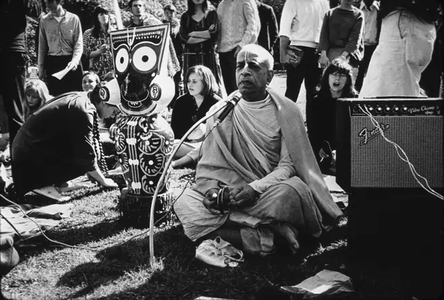

Vanipedia
The essence of Vedic knowledge
Welcome to Vanipedia, a dynamic, living encyclopedia of Śrīla Prabhupāda’s words (vani). We are building an unparalleled digital repository of his text, audio, video, and images, comprehensively compiling his teachings from every angle of vision.
Start here
Browse topics

Śrīla Prabhupāda
His Divine Grace A. C. Bhaktivedanta Swami Prabhupāda
Founder-Ācārya and Preeminent Śikṣā-Guru of the International Society for Krishna Consciousness
Read & listen
Articles
-
Assisting Kṛṣṇa: The Perfection of Devotional ServicePrototype
AI-assisted summary of the Vaniquotes category “Assisting Krsna”. Quotations verbatim; framing generated. See Methodology.
-
The Perils of Having No IdeaPrototype
AI-assisted summary of the Vaniquotes category “Have No Idea”. Quotations verbatim; framing generated. See Methodology.
-
Śrī Caitanya Mahāprabhu’s Grandfather Nīlāmbara CakravartīPrototype
AI-assisted summary of the Vaniquotes category “Nilambara Cakravarti”. Quotations verbatim; framing generated. See Methodology.
Nectar Drops
Nectar Drops are short, focused audio excerpts of less than 90 seconds, drawn directly from Śrīla Prabhupāda’s recorded lectures, conversations, and morning walks.
Lecture, Hamburg, 5 September 1969. All Nectar Drops
Śrīla Prabhupāda in the Media
Disciples Remember Śrīla Prabhupāda
The four petals
Timeline
- Born in Calcutta.
- Meets Śrīla Bhaktisiddhānta Sarasvatī.
- The first Back to Godhead.
- Rādhā-Dāmodara temple, Vṛndāvana.
- Sails on the Jaladuta, August.
- ISKCON incorporated in New York, July.
- San Francisco, January.
- Moscow.
- Departs in Vṛndāvana, 14 November.